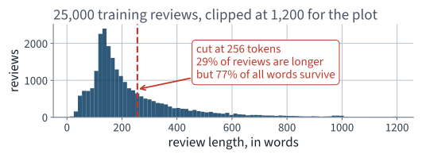
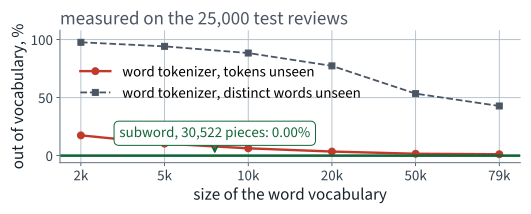
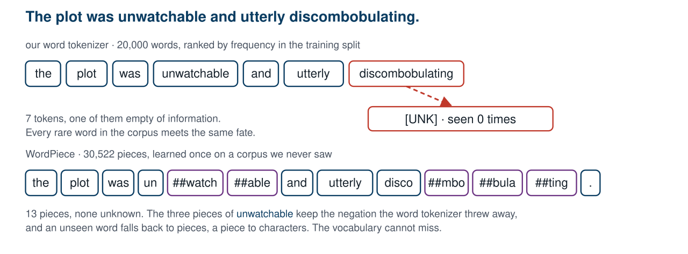
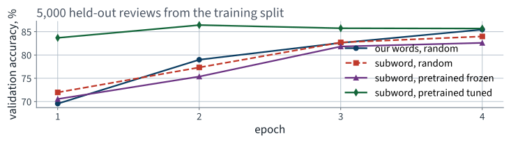
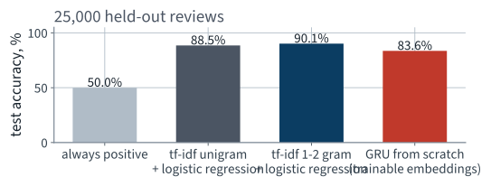
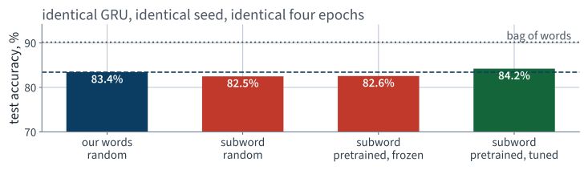

Application 11 · IMDb film reviews
Lecture 21 · Build Géron Ch. 14
Applications of Machine Learning
BSc Mathematics of Artificial Intelligence · Third year
The transit forecast. A random split on an autocorrelated series reported a score the model could not reproduce on the future, and time-based backtesting took it away again.
That single change is the whole of the first hour.
One new idea per block: subword tokenisation, then trainable embeddings, then a swap that changes nothing about the architecture.
Part one
15 minutes · the problem, the data, the stakeholder
A streaming service's customer-feedback desk.
Every title carries free-text reviews. Nobody reads them. The desk wants, for each new review, a single label — satisfied or not — so that the unhappy ones can be routed to a human within the hour.
| Their words | What that specifies |
|---|---|
| “tell us if it is a complaint” | binary classification |
| “from the text alone” | one variable-length string in, one label out |
| “within the hour” | inference cost matters; training cost does not |
| “we will read the ones you flag” | the errors are absorbed by a human |
Four sentences, and every one of them is a design decision you would otherwise have made silently.
Everything in Chapters 1–13 arrived as a table: a fixed set of features, in a fixed order, each a number or a category.
So before any model, there is a question no previous application had to answer: what is the unit?
The Large Movie Review Dataset — the corpus the book uses for sentiment. Fetched from Stanford directly, about 80 MB.
URL = "https://ai.stanford.edu/~amaas/data/sentiment/aclImdb_v1.tar.gz"
def load_imdb():
if not DATA.is_dir():
urllib.request.urlretrieve(URL, tarball)
with tarfile.open(tarball) as t:
t.extractall(path=CACHE, filter="data")
...
A function, not a manual download — the same rule as Lecture 1. The split into train and test ships with the corpus, so every course in the world reports on the same reviews.
| Quantity | Value |
|---|---|
| Training reviews | 25,000 |
| Test reviews | 25,000 |
| Positive share, training | 50.0% |
| Positive share, test | 50.0% |
Balanced by construction, in both halves.
Which settles a question Lecture 4 spent ninety minutes on, and settles it in our favour for once.
and, from the other half of the corpus:
“This is by far one of the worst movies i have ever seen, the poor special effects along with the poor acting are just a few of the things wrong with this film.”
Both are easy. Most are. The interesting question is what fraction is not, and that is what the metric will tell you.
“When I first saw this film it was not an impressive one. Now that I have seen it again with some friends on DVD, my opinion remains the same. The subject matter is puerile and the performances are weak.”
Any method that treats a review as an unordered bag of words has thrown away the negation before it starts. Remember that; we are going to measure it.

A long tail. Wherever you cut, you cut something — so the cut is a decision to make on purpose and record.
| Statistic | Words |
|---|---|
| Mean | 234 |
| Median | 174 |
| 90th percentile | 458 |
| Longest | 2,473 |
We will keep the first 256 tokens of every review. That truncates 29% of the reviews and still keeps 77% of all the words in the corpus.
Both numbers, not one. “29% are truncated” sounds alarming until you notice how little of the text it removes.
Lower-case, split on non-letters, count:
| Quantity | Value |
|---|---|
| Distinct words in the training reviews | 87,171 |
| Words that appear exactly once | 35,344 |
| … as a share of the vocabulary | 41% |
Two words in five are seen once and never again.
You cannot learn a vector for a word from one example, and you cannot afford a row in a table for every one of them.
Two numbers per review: one score per class. Everything between the string and those two numbers is what we build today.
Only the first two are new. The last two are Lectures 12 and 20 unchanged.
Part two
15 minutes · anchored, then written down
Lecture 4's rule: count the classes before choosing a metric. We counted. They are 50.0% to 50.0%.
It is defensible on this corpus. Real feedback is not balanced, and the first slide of the next application you build should ask the question again.
We report accuracy as the headline because the brief is symmetric and the corpus is balanced — and we keep the confusion matrix beside it, as in Lecture 4.
If the desk later says a missed complaint is worth five false alarms, the metric changes and nothing else does.
Before anything is built: predict the majority class for every review.
majority = max(y_test.mean(), 1 - y_test.mean())
print(f"always predict one class: {majority:.1%}")
50.0%
Rule 2 of this course: a metric with nothing to compare it to is decoration. This is the floor, and it is a low one.
50% is not a serious anchor. A room that commits against 50% will commit to something it would be embarrassed by.
So compute the honest one too: bag of words plus logistic regression. Count the words, ignore the order, fit a linear model. Chapter 4, on a matrix of word counts.
One column per term in the vocabulary; one row per review; the entry is how often the term occurs, weighted down if the term is common everywhere.
$N$ is the number of documents and $n_t$ the number containing $t$. The second factor is what stops the and movie dominating the first. Scikit-Learn uses a smoothed variant, $\log\frac{1+N}{1+n_t} + 1$, and normalises each row to unit length.
Note what is not in that formula: position. The bag has no order, so it cannot see the negation two slides ago.
from sklearn.feature_extraction.text import TfidfVectorizer
from sklearn.linear_model import LogisticRegression
# fit on the training reviews ONLY — the vectoriser is a fitted estimator
vec = TfidfVectorizer(min_df=2, ngram_range=(1, 2),
max_features=200_000)
X_train = vec.fit_transform(train_x)
clf = LogisticRegression(max_iter=2000, C=4.0).fit(X_train, train_y)
acc = (clf.predict(vec.transform(test_x)) == test_y).mean()
print(f"tf-idf + logistic regression: {acc:.1%}")
Line 7 is fit_transform on the training reviews;
line 10 is transform on the test reviews. Different verbs. Hold
on to that — it is the last thing we do in the next lecture.
| Model | Features | Test accuracy |
|---|---|---|
| Always predict one class | — | 50.0% |
| tf-idf, single words | 44,798 | 88.5% |
| tf-idf, words and pairs | 200,000 | 90.1% |
90.1%, from counting words, in 10 seconds.
Adding pairs of adjacent words buys most of a point, and pairs are the cheapest way a bag can see not good.
This is the point of computing the honest baseline before the commitment rather than after. Anchored against 50%, a room writes down 75% and is delighted. Anchored against 90.1%, the same room has to think.
Metric:
Accuracy the desk would need to trust it: %
Accuracy I expect from the model I build today: %
Best accuracy I actually obtain: %
A prediction you can quietly revise is not a prediction. Bring the sheet to the next lecture.
Part three
60 minutes · tokenizer, embeddings, recurrence
Open Lecture 21 in Google Colab
cpu, fix that now: the recurrent
model is the slowest thing you have trained so far.
| Stage | In | Out |
|---|---|---|
| Tokenize | one string | (256,) integers |
| Embed | (B, 256) | (B, 256, 128) |
| Recur | (B, 256, 128) | (B, 128) |
| Head | (B, 128) | (B, 2) |
Write those four shapes on your sheet. Reviewer question three — what is the shape here? — is the question that catches most of what goes wrong in the next hour.
The unit the model counts as one thing.
This is a modelling decision, not a preprocessing detail. It fixes the vocabulary, the sequence length, and what the model can possibly represent.
WORD_RE = re.compile(r"[a-z0-9']+")
def word_tokens(s):
return WORD_RE.findall(s.lower().replace("<br />", " "))
That is the whole specification. Three decisions are already made in it, and every one is arguable:
<br /> is not a wordIf you had not looked at the raw text you would have
learned br as one of the commonest words in the corpus.
87,171 distinct words is too many rows to learn.
So keep the commonest $V$ and map everything else to a single token,
[UNK].
counts = Counter(w for s in fit_x for w in word_tokens(s))
w2i = {w: i + 2 for i, (w, _) in enumerate(counts.most_common(V - 2))}
# 0 = padding, 1 = [UNK]
Read line 1 again. fit_x, not
train_x + test_x. Building the vocabulary is
fitting, and it obeys the same rule as every other fitted
thing in this course.

The token rate looks survivable. The rate over distinct words never does — and those are the informative ones.
| Word vocabulary | Test tokens unseen | Distinct test words unseen |
|---|---|---|
| 2,000 | 17.5% | 97.7% |
| 20,000 — our choice | 3.5% | 77.3% |
| every word in the corpus | 1.2% | 42.8% |
Even a vocabulary of every training word leaves 43% of the distinct test words unrepresented, because the test reviews contain words the training reviews never used. The problem is not the size of the vocabulary. It is that a word vocabulary is closed and language is not.
Keep whole words for the common ones. Break the rest into pieces that are in the vocabulary.
Byte-pair encoding, and WordPiece, which differs only in the criterion for which pair to merge. Chapter 14 names both.
The merges are learned once, on some corpus, and then shipped. That is the first pretrained thing we use today.

Above, the rarest and most informative word became nothing. Below, it became four pieces the model has vectors for.
| Tokens | Unknown | |
|---|---|---|
| Our word tokenizer, 20,000 words | 7 | 1 |
| WordPiece, 30,522 pieces | 13 | 0 |
Across the whole test set the subword tokenizer produces 0.00% unknown tokens, against 3.5% for our vocabulary of 20,000.
The price is length: 1.86 tokens per word on this sentence, so a fixed budget of 256 positions now holds fewer words.
[UNK].
[UNK] destroyedToken 4271 is not four thousand of anything. The integer is a name, and arithmetic on names is meaningless.
The obvious fix is one-hot: 20,000 columns, one of them 1. That is a 20,000-dimensional vector per token, and 256 of them per review.
import torch.nn as nn
emb = nn.Embedding(num_embeddings=20_000, embedding_dim=128,
padding_idx=0)
x = torch.randint(0, 20_000, (32, 256)) # a batch of token ids
print(emb(x).shape) # torch.Size([32, 256, 128])
padding_idx=0 pins row 0 at zero and keeps it there —
padding must not learn anythingA batch is a rectangle. Reviews are not. So short reviews are padded to 256 with token 0 and long ones are cut.
X = np.zeros((len(seqs), MAXLEN), dtype=np.int64)
L = np.zeros(len(seqs), dtype=np.int64)
for i, s in enumerate(seqs):
s = s[:MAXLEN]
X[i, :len(s)] = s
L[i] = max(len(s), 1) # keep the true length. You will need it.
Keep L. A padded batch has lost the
information about where each review ends, and a recurrent layer that is not
told will happily read two hundred zeros and report on those.
class GRUClassifier(nn.Module):
def __init__(self, vocab):
super().__init__()
self.emb = nn.Embedding(vocab, 128, padding_idx=0)
self.rnn = nn.GRU(128, 64, batch_first=True, bidirectional=True)
self.head = nn.Linear(2 * 64, 2)
def forward(self, x, lengths):
e = self.emb(x)
packed = nn.utils.rnn.pack_padded_sequence(
e, lengths.cpu(), batch_first=True, enforce_sorted=False)
_, h = self.rnn(packed)
return self.head(torch.cat([h[0], h[1]], dim=1))
Thirteen lines, and eleven of them are Lecture 12. The two new ones are the embedding and the packing.
| Choice | Why |
|---|---|
bidirectional=True | a review's verdict can be in the first sentence or the last |
| the final hidden state | one fixed-size summary of a variable-length input |
| GRU, not LSTM | fewer gates, fewer parameters, and Lecture 20 measured no difference here |
h[0] is the forward direction's last state,
h[1] the backward direction's — which, read as a sequence,
is the first token. Concatenating them gives the head both ends.
pack_padded_sequence, and what it preventsIt hands the recurrent layer only the real timesteps, so the state returned for a review of 40 words is the state after its 40th word — not after 216 zeros.
This slide exists because the version without it also runs, also trains, and also reports a plausible number. We are going to measure how plausible.
opt = torch.optim.Adam(model.parameters(), lr=1e-3)
lossf = nn.CrossEntropyLoss()
for epoch in range(4):
model.train()
for xb, lb, yb in batches:
opt.zero_grad()
out = model(xb, lb)
loss = lossf(out, yb)
loss.backward()
opt.step()
Exactly the five lines from Lecture 12, in the same order, with the same two silent failures waiting if any of them is deleted. Nothing about text changes the loop.
Note line 2. What CrossEntropyLoss is
actually given, and why, is the whole mathematical thread of the next lecture.
| Setting | Value |
|---|---|
| Reviews used to fit | 20,000 |
| Reviews held out for validation | 5,000 |
| Reviews in the test set, untouched | 25,000 |
| Epochs, batch size, learning rate | 4, 64, 0.001 |
| Parameters | 2,634,754 |
| Wall clock, one run | 460 s |
Measured on an Apple MPS backend. A Colab T4 is faster; a CPU is several times slower, which is why the device slide came first.

Ignore three of the four curves for now. The blue one is the model we have just built.
| Model | Test accuracy |
|---|---|
| Always one class | 50.0% |
| tf-idf + logistic regression | 90.1% |
| GRU, our tokenizer, trainable embeddings | 83.4% |
Write the third number on your sheet.
Then look at the second one for a moment before turning the page.

The recurrent network, with an embedding it learned itself, loses to counting words.
6.72 points
behind a linear model on word counts that fits in 10 seconds, from a network that took 460 seconds and can, in principle, see word order.
This is a real and reproducible result on this corpus, and it is not a bug in the code. It is worth sitting with.
Written as a hypothesis on purpose. The next twenty minutes are an experiment that can refute it, and you should decide now what result would.
Under-specified in exactly one place. Read the code it returns before you read the next slide, and find it.
class GRUClassifier(nn.Module):
def __init__(self, vocab):
super().__init__()
self.emb = nn.Embedding(vocab, 128, padding_idx=0)
self.rnn = nn.GRU(128, 64, batch_first=True, bidirectional=True)
self.head = nn.Linear(2 * 64, 2)
def forward(self, x):
out, _ = self.rnn(self.emb(x))
return self.head(out[:, -1, :]) # the last timestep
Same embedding, same GRU, same head as ours. It runs, the shapes are right, the loss goes down, and it reports an accuracy well above the majority class.
out[:, -1, :] is the hidden state after position 255.
The state does not stay put across those zeros. A GRU has an update gate, and feeding it a constant input drifts the state toward a fixed point that carries no information about the review.
| Same architecture, same seed, same four epochs | Test accuracy |
|---|---|
| Final state at the true last token | 83.4% |
| Final state at position 255 | 65.2% |
18.24 points
No exception, no warning, no NaN. The broken
version still beats the majority class, so nothing in the output says the
model is reading zeros.
pack_padded_sequence. Assert that two batches
containing the same review with different padding produce the same
logits.”
The assertion is the part worth copying. A padding bug is exactly the class of error that a test on invariance catches and a test on output shape does not.
one = model(x[:1, :len_one], torch.tensor([len_one]))
two = model(x[:1, :], torch.tensor([len_one])) # same review, padded
assert torch.allclose(one, two, atol=1e-5), "padding is being read"
Costs nothing, runs in milliseconds, and fails loudly on the assistant's version. The general habit: when a representation has a piece that is supposed to be ignored, test that changing it changes nothing.
Part three, continued
the architecture stays exactly as it is
So replace the table. Nothing else.
emb.weight changeTwo changes, applied one at a time, so that the measurement says which one did the work. Changing both at once and reporting the total is how you learn nothing from an experiment.
from transformers import AutoTokenizer
tk = AutoTokenizer.from_pretrained("distilbert-base-uncased")
enc = tk(texts, truncation=True, max_length=256, padding="max_length")
model = GRUClassifier(vocab=tk.vocab_size) # 30,522 rows, random
Subword pieces instead of words. 30,522 rows instead of 20,000. Random initial values, exactly as before.
Predict what this does before you turn the page. Most rooms predict it wrong.
| Tokenizer | Vocabulary | Test accuracy |
|---|---|---|
| our words | 20,000 | 83.4% |
| subword pieces, random vectors | 30,522 | 82.5% |
No better.
-0.94 accuracy points, from one seed each — which is not enough to call a ranking, and we will not. What the measurement does say is that solving the out-of-vocabulary problem, on its own, bought nothing.
The same subword vocabulary has an embedding table that was already trained — on far more text than this corpus, by someone else, for a different task.
from transformers import AutoModel
bert = AutoModel.from_pretrained("distilbert-base-uncased")
E = bert.embeddings.word_embeddings.weight.detach().numpy()
print(E.shape) # (30522, 768)
768 columns; our architecture has 128. Widening the GRU would change the architecture, and then the comparison measures two things at once.
Project 768 dimensions down to 128 with PCA — the same PCA from Lecture 10, minimising reconstruction error over the whole table.
Z = PCA(n_components=128, random_state=42).fit_transform(E)
Z = Z / Z.std() * 0.1 # match nn.Embedding's own initial scale
Those 128 components keep 46.9% of the variance of the original table.
Less than half — and that is the honest form of this step. We are throwing away most of the variance and it still helps, which says something about how much redundancy 768 dimensions carry.
model.emb.weight.data.copy_(torch.from_numpy(Z))
model.emb.weight.requires_grad = False # frozen — or True, tuned
| Frozen | Fine-tuned | |
|---|---|---|
| What is learned | the GRU and head only | everything |
| Risk | the vectors may not suit the task | 20,000 labels can overwrite them |
Which is better is not decidable from the armchair. Run both; it is one boolean.

Two things differ across these four bars: which tokenizer produced the ids, and what was in the embedding table at step zero.
| Tokenizer | Embedding table starts as | Test accuracy |
|---|---|---|
| our words | random | 83.4% |
| subword | random | 82.5% |
| subword | pretrained, frozen | 82.6% |
| subword | pretrained, tuned | 84.2% |
0.79 points, and not one line of the model changed.
Positive, and small — about the size of the swing we refused to call a ranking two slides ago. Only the last row beats what you built this morning, and only by about a point.
| Change | Worth |
|---|---|
| a subword tokenizer, on its own | -0.94 points |
| pretrained vectors, frozen | -0.86 points |
| pretrained vectors, allowed to move | 0.79 points |
So the hypothesis was half right.
The embedding table was holding the model back — but replacing it is worth about a point, not the 6.72 the bag of words is ahead by. One tensor out of a model is not enough of a model.
| Unchanged | Changed |
|---|---|
| GRU width, depth, direction | the tokenizer |
| the head, the loss, the optimiser | the initial values in one tensor |
| epochs, batch size, learning rate, seed | whether that tensor is trainable |
| the data, the split, the metric |
Everything on the left is what you would spend a week tuning. Everything on the right took ten minutes and moved the number more.
| Best validation | Test | Trainable parameters | |
|---|---|---|---|
| Frozen | 82.6% | 82.6% | 74,754 |
| Tuned | 86.4% | 84.2% | 3,981,570 |
With 20,000 labelled reviews, letting the vectors move helps. With a few hundred it usually does not, and freezing is the safer default — a trade-off you now have the measurement to make rather than the opinion.
The tuned run's training loss reaches 0.0374 by the fourth epoch. It has memorised the reviews it was fitted on.
| Model reported | Our words | Subword, pretrained |
|---|---|---|
| after the last epoch | 83.4% | 82.3% |
| at its best validation epoch | 83.4% | 84.2% |
Early stopping, from Lecture 6, and it is worth 1.86 points here. Validation chose epoch 2 of 4 for the pretrained run and epoch 4 for ours.
Our validation split was carved out of the training half, so it shares films with the fit split — and a model that memorises film-specific vocabulary is flattered by it. The test half shares no films with anything, which is why the drop from validation to test is larger for the run that overfits most.
A validation set drawn from the same pool as the training data answers “when should I stop?” It does not answer “how well will this do?”
| Model | Test accuracy |
|---|---|
| Always one class | 50.0% |
| tf-idf + logistic regression | 90.1% |
| GRU, our tokenizer, random embeddings | 83.4% |
| GRU, subword, pretrained embeddings | 84.2% |
Read the last two rows against the second. That is the question to take home, and the sheet in front of you has a line for it.
That is transfer learning, and it is the same argument as Lecture 16's frozen convolutional backbone — a different modality, an identical shape of reasoning.
transformers and the model hub are not in the book. They are on
this slide because downloading a tokenizer and an embedding matrix is two
lines, and the alternative is a lecture about file formats. What
is examinable is what a tokenizer and an embedding table are, and
why swapping them moved the number.
Everything in Chapters 14 and 15 that this uses — subword tokenisation, embeddings, recurrent classifiers, transfer of pretrained weights — is examinable.
| Model | Test accuracy | Wall clock |
|---|---|---|
| Always one class | 50.0% | — |
| tf-idf + logistic regression | 90.1% | 10 s |
| GRU from scratch | 83.4% | 460 s |
| GRU, pretrained embeddings | 84.2% | 302 s |
| the assistant's version | 65.2% | 173 s |
Five numbers, one architecture, one afternoon — and the best of them is still 6.72 points behind counting words.
Best accuracy I actually obtained: %
… against what I predicted this morning: %
We score these out loud at the start of the next lecture. Nobody is asked to defend a guess; the useful thing is the size and the sign of the gap.
CrossEntropyLoss receive, and why does it
want the raw two numbers rather than probabilities?All four are the next lecture. Write down your answer to the first one now, before you are told it.
Swap notebooks with the team beside you. Ten minutes, the five standing questions plus three that only exist because today was text:
fit and transform
are different verbs)[UNK]?Report what you found, not what you would have done differently.
[UNK]? Count itSix questions. The first is the one that will cost you the most, and it is the one the next lecture ends on.
| Topic | Chapter |
|---|---|
| Text preprocessing and vocabularies | 14 |
| Subword tokenisation, byte-pair encoding | 14 |
| Word embeddings and embedding layers | 14 |
| Recurrent classifiers for sentiment | 14 |
| Reusing pretrained embeddings | 14 |
| Recurrent layers, GRU cells | 13 |
| PCA and reconstruction error | 7 |
Lecture 22 · Fix
Thread 11: cross-entropy, softmax and logits
Then the whole pretrained model, not just its first layer
and a leak that is genuinely expensive on text
Bring the sheet